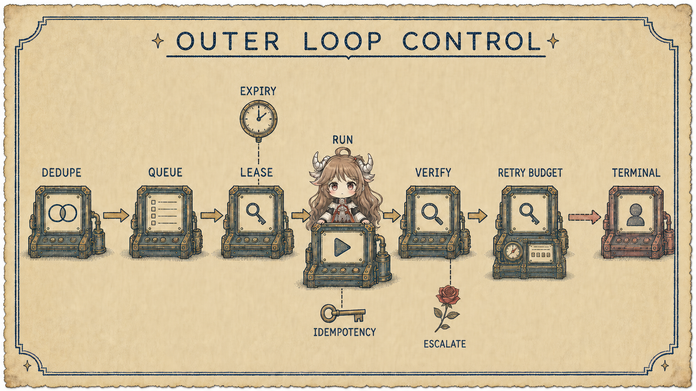
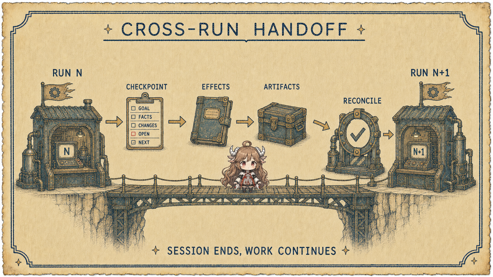

一次 run 可能在十分钟内修好问题，也可能因为窗口、预算、环境重启或人工决策而结束。真正的工作对象却往往活得更久：一个 issue 经过调查、实现、CI、review 和修复；一个告警经历诊断、缓解、复盘；一份报告每天收集新数据。Outer loop 的任务，是让这些长期对象不依赖某个会话的偶然记忆。
阅读契约
- 这篇回答：怎样跨 run 管理工作、所有权、验证、checkpoint、重试和升级。
- 术语说明：“Loop Engineering” 是本系列给 outer-loop 设计的操作性标签，不宣称它是 OpenAI 或 Anthropic 的统一官方术语。
- 读完检查：你能把 cron + prompt 改写成带 work item、lease、idempotency、verifier 和 terminal state 的系统。
证据边界
OpenAI 的 Harness engineering 公开了 agent-first 团队如何让 Codex review、迭代到满足检查；2026 年官方 Symphony 规范进一步展示持续观察任务板、为任务启动 agent 的 orchestrator。Anthropic 的 long-running harness 与 Managed agents 说明 checkpoint、session 和跨窗口进展。本篇从这些一手机制抽象 outer loop，不引用社区命名作为定义来源。
一、Outer loop 的对象是 Work Item，不是 Chat
Chat 适合交互，work item 才适合运营。它要有稳定 id、目标、完成标准、优先级、依赖、当前 owner、attempt、checkpoint、外部对象引用和终态。Run 只是某次处理 work item 的执行实例。
{
"work_id": "issue-1842",
"state": "running",
"goal": "Payment regression fixed and merged",
"done_checks": ["ci:required", "review:approved"],
"lease": { "run_id": "run-31", "expires_at": "..." },
"attempt": 3,
"checkpoint_ref": "checkpoint://issue-1842/2",
"retry_budget": { "remaining": 2 },
"idempotency_key": "issue-1842:fix:v3"
}二、完整 outer loop 有六个阶段
| 阶段 | 控制问题 | 必须留下的事实 |
|---|---|---|
| Trigger | 事件、时间、人工还是依赖完成触发？ | 触发源、去重键、时间 |
| Select work | 优先级、依赖、能力和并发是否允许？ | 选择理由、lease |
| Launch run | 用哪个 harness、模型、权限和 checkpoint？ | run config 与输入版本 |
| Verify | 结果满足哪些独立 done checks？ | 验证证据与失败分类 |
| Persist | 哪些状态、artifact 和外部变化必须持久化？ | checkpoint、effect ledger |
| Retry / next | 重试、换策略、下一个任务或人工升级？ | 决策原因与新预算 |
三、触发和选工需要租约，不只是队列
Webhook 可能重复，cron 可能重叠，worker 会崩溃，网络分区会让完成通知丢失。没有 ownership protocol，同一 work item 可能被多个 agent 同时修改，或在 worker 死亡后永久卡住。Lease 提供带过期时间的临时所有权：worker 定期续约，完成或失败后释放，超时可被重新领取。

- Deduplication：相同外部事件只创建一个 work item。
- Lease：同一时刻只有一个 run 拥有排他写权；只读调查可另设并行策略。
- Heartbeat：区分长运行与已死亡 worker。
- Fencing token：旧 lease 即使迟到，也不能覆盖新 owner 的状态。
- Backpressure：根据资源、风险和人工审查容量限制启动。
四、跨 Run 的关键不是摘要，而是 Handoff
Anthropic 的 long-running harness 经验强调，让后续 agent 能从明确进展文件、git 状态和干净的任务切片继续。Handoff 必须同时服务机器与人：结构化字段保证恢复，叙述记录决策与异常；原始 artifact 保留证据。

| Handoff 字段 | 回答的问题 | 恢复检查 |
|---|---|---|
| Goal / done | 要完成什么？ | 是否仍有效 |
| Confirmed facts | 已经知道什么？ | 来源是否可访问、新鲜 |
| Effects | 已经改了什么外部状态？ | 与真实世界对账 |
| Attempts | 哪些路径失败、为什么？ | 避免同策略重复 |
| Open / next | 阻塞点和最小下一步？ | 能力与权限是否足够 |
| Artifacts | 日志、diff、测试和截图在哪里？ | 引用是否完整 |
五、Retry budget 属于 Work Item
Inner loop 的一次工具重试与 outer loop 的整次 run 重试不同。后者成本更高，也更容易重复副作用。每次重新启动前要问：失败类别是什么？新 run 会得到什么变化？旧效果是否已对账？还剩多少预算？如果答案只有“再试一次”，就不该自动重试。
重试预算应随 work item 持久化，不能在 worker 重启后归零。可以按错误类别设置不同策略：基础设施短暂错误自动退避；权限阻塞直接等待审批；同一 invariant 连续失败转人工；高风险外部写在状态不明时先 reconcile，不能重放。
六、Idempotency 与 Effect Ledger 防止重复世界
“创建 PR”“退款”“发通知”都可能出现请求成功但响应丢失。Outer loop 若只看本地超时，会再次执行。每个可重试副作用应携带稳定 idempotency key，并把 proposed、started、committed、observed 状态写入 effect ledger。恢复时先查询外部世界，再决定继续、补偿或完成。
- 把“我调用过”与“世界已经改变”分开记录。
- 优先使用外部 API 的幂等键；没有时用业务唯一键和对账查询。
- 补偿动作也要被建模和审计，不能假设所有效果可回滚。
- 未知状态不是失败重试，而是 reconciliation 状态。
七、人应该接管判断边界，而不是当轮询器
OpenAI Harness engineering 的核心约束是人类注意力稀缺。Outer loop 应把人放在高杠杆边界：目标冲突、高风险授权、无法自动判定的质量、预算继续投入。系统要给出压缩但充分的升级包：发生了什么、已验证什么、选项与影响、推荐动作、截止时间。
八、复盘：Outer Loop 上线前的决策表
| 问题 | 最低机制 | 没有它会怎样 |
|---|---|---|
| 重复事件会创建重复工作吗？ | dedupe key | 并发重复副作用 |
| 谁拥有当前 work item？ | lease + fencing | 双写或永久卡住 |
| Run 结束后怎样判断完成？ | 独立 verifier | 把 final 当结果真值 |
| 下一次 run 从什么继续？ | checkpoint + artifacts | 丢状态、重做调查 |
| 重试会改变什么？ | error class + persistent budget | 无限烧钱 |
| 外部效果状态不明怎么办？ | idempotency + effect ledger | 重复退款、PR 或通知 |
| 什么时候找人？ | escalation policy | 无人负责或人被频繁打断 |
Outer loop 把 run 变成了可运营的工作系统。但它仍需要一个外部真值来判断“verify”是否可信。最后一篇进入 Evals 与反馈：怎样测结果、定位失败层，并把证据变成下一次系统改动。